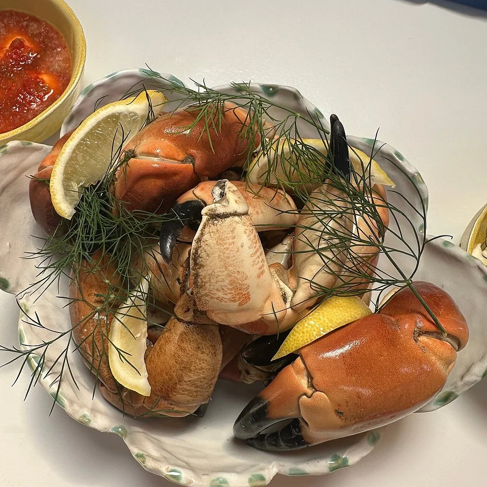
Krabbekløer
Kogte krabbekløer, en dressing og en kniv, der er skarpere end den ser ud. Resten knækker du selv.
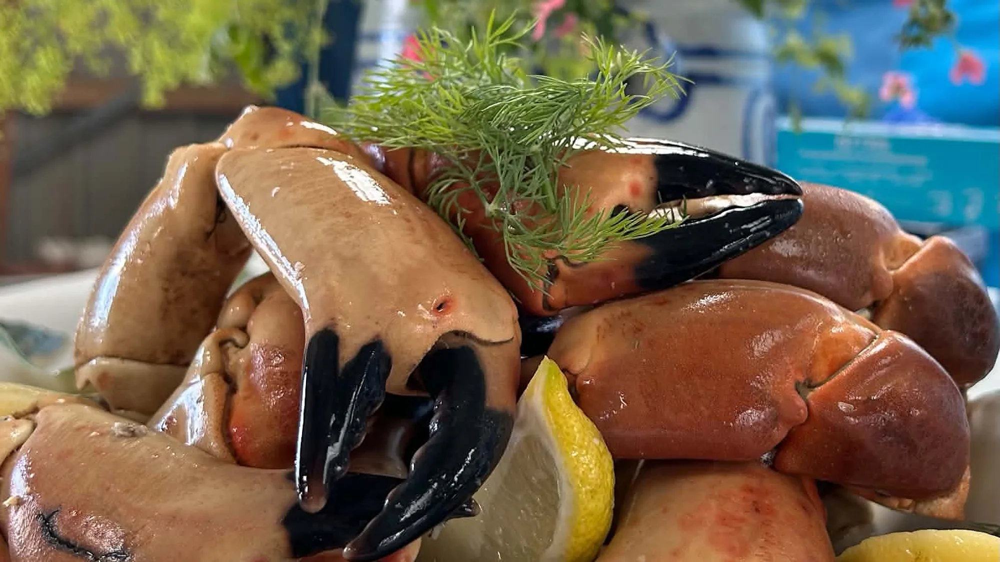
Thorupstrand
Krabbekløer, rejer og røget sild i vores fars gamle redskabshus, hundrede meter fra havet, hvor de blev fanget.
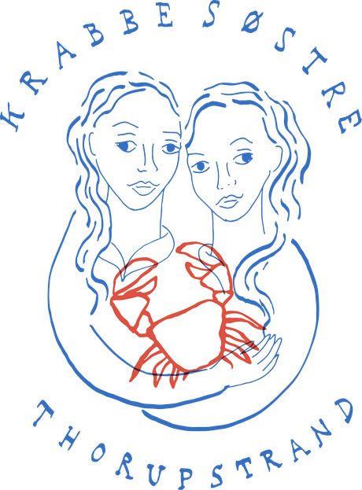
Her skal krabbekløerne ikke bare nydes. De skal knækkes.
Du får et fad, en kniv, en dressing og al den tid, det tager. Ingen piller for dig; det er hele pointen. Når kløen endelig giver slip, smager den af mere end krabbe. Den smager af eftermiddag.
Har man ikke lyst til at slås med skallerne, står der en skål håndpillede rejer klar i stedet.
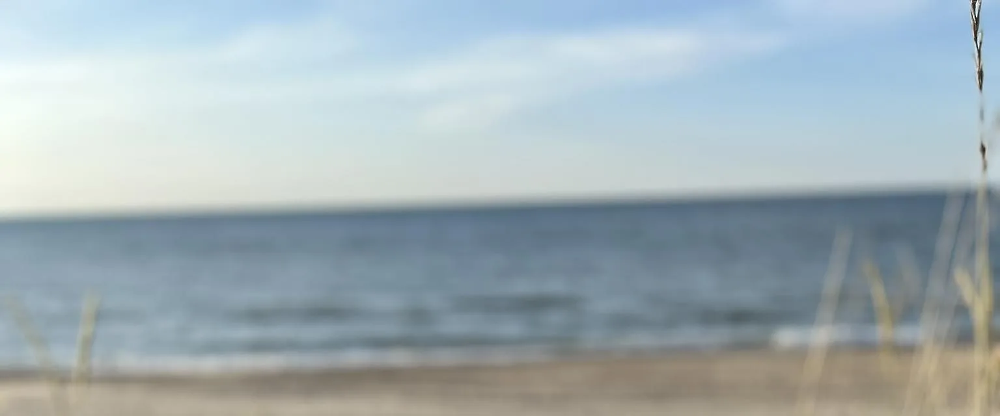
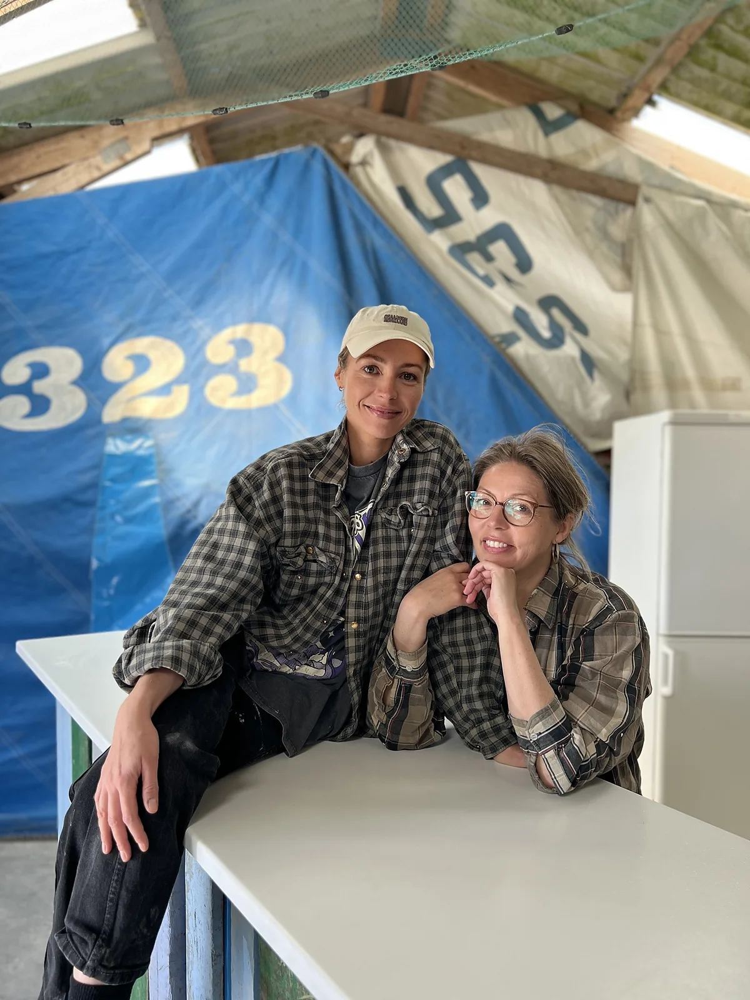
Historien
Det meste af sit liv har han tilbragt til søs eller i redskabshuset bag klitten, hvor garnene blev klippet, og fiskerne mødtes over en kop kaffe.
Hans kutter hed Ralima. Ikke efter et sted eller en helgen, men efter os: Ragnhild, Lili og Maiken. Mor og de to døtre, skrevet sammen til ét navn og malet på siden af en båd.
I 2025 ryddede vi huset, satte borde ind mellem hummertejnerne og åbnede dørene. Fiskekasserne hænger stadig i loftet. Garnene hænger stadig på væggen. Radioen fra kutteren står stadig på hylden. Den virker endda.
Vi kan jo ikke lave andet end en krabberestaurant. Ragnhild Gjettermann
Kutteren Ralima, HM 323. Siden 2025 også adressen på en sommerrestaurant.
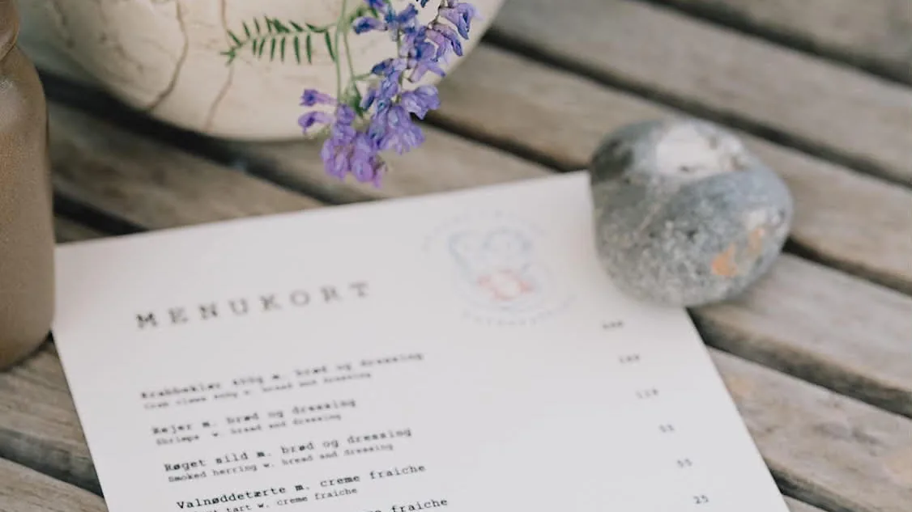
Praktisk
Kort
Thorupstrandvej 323
9690 Fjerritslev
Kortet hentes først hos Google, når du beder om det. Indtil da sætter siden hverken cookies eller sporing.
Regn med halvanden til to timer. Det tager tid at pille en krabbe, og det er meningen.
Der er højt til loftet og tynde vægge. Skønt når solen står ind, køligt når vinden vender.
Vi tager gerne imod gæster uden bord, når der er plads. I juli er der sjældent plads.
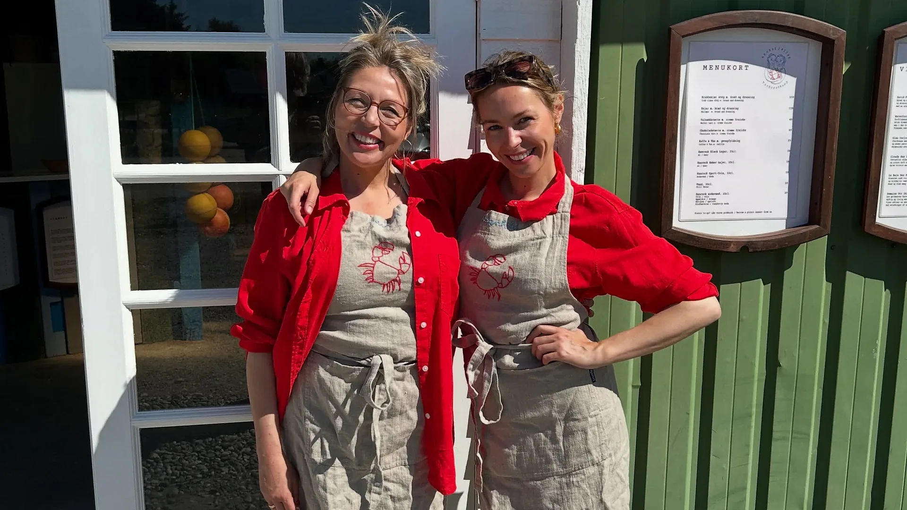
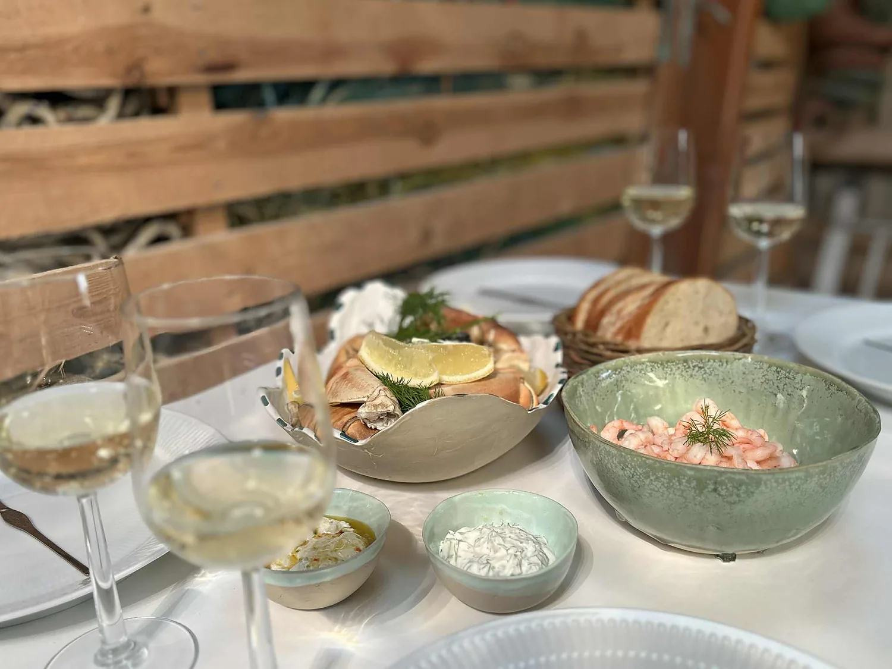
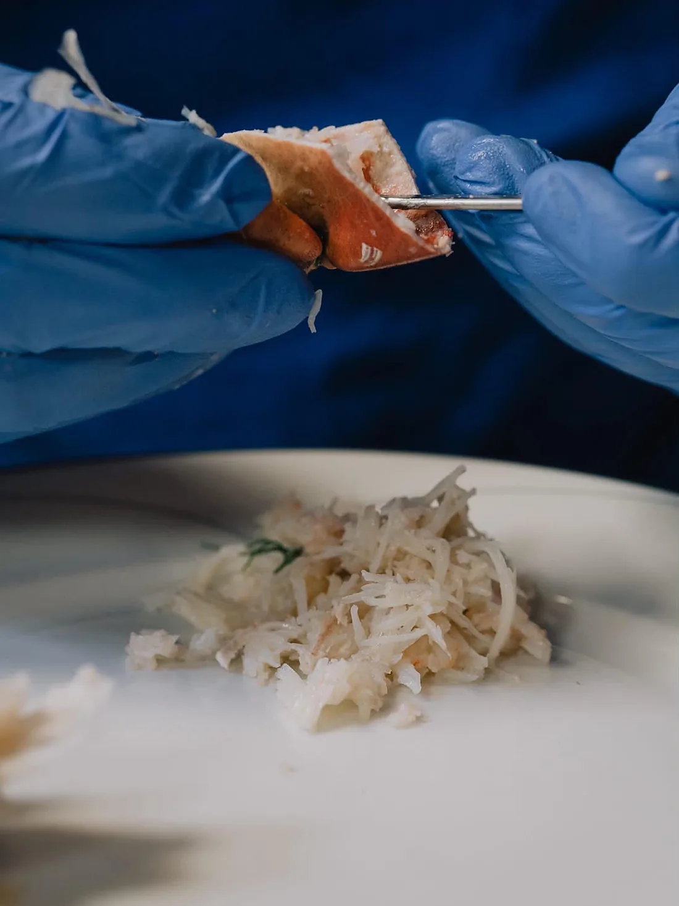
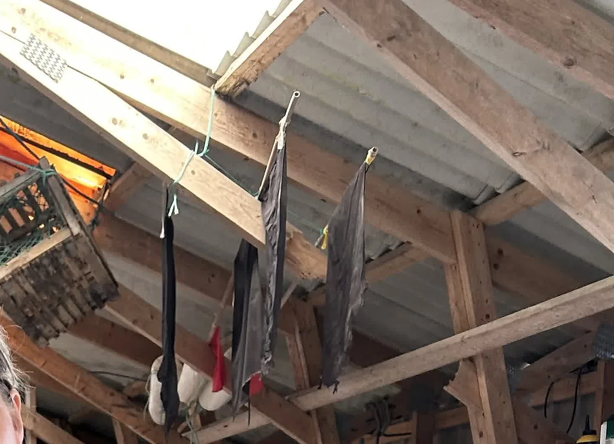
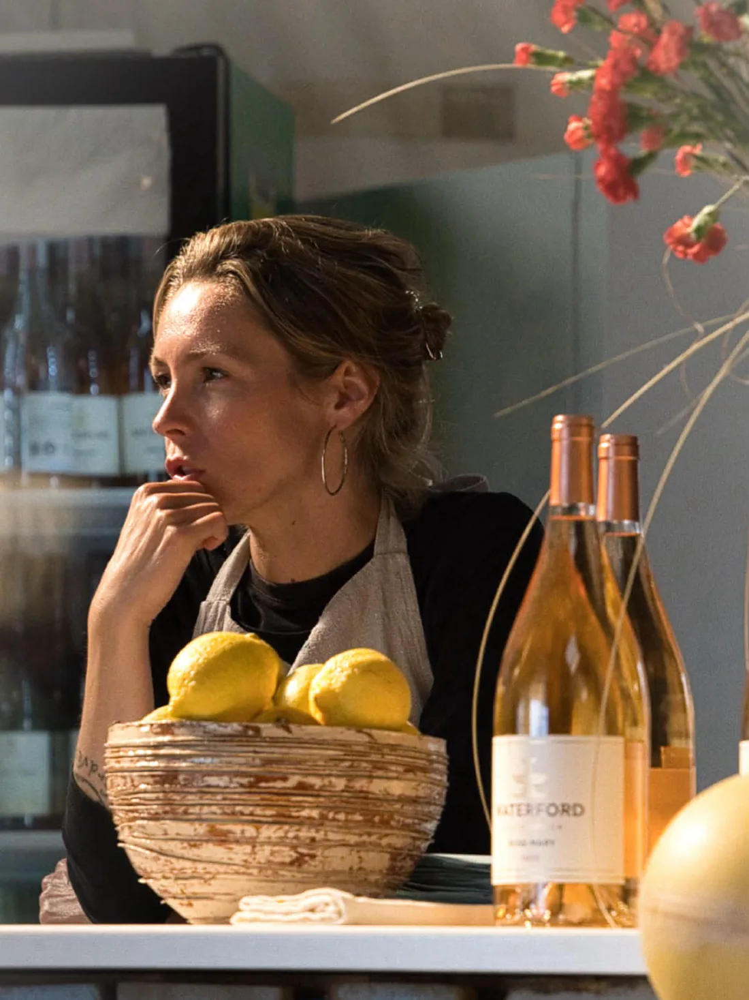
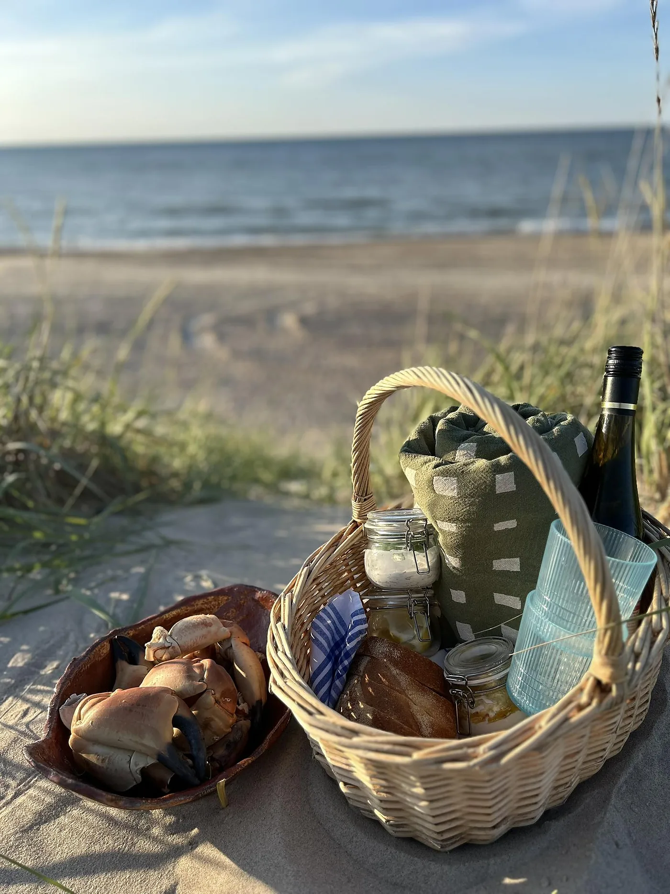
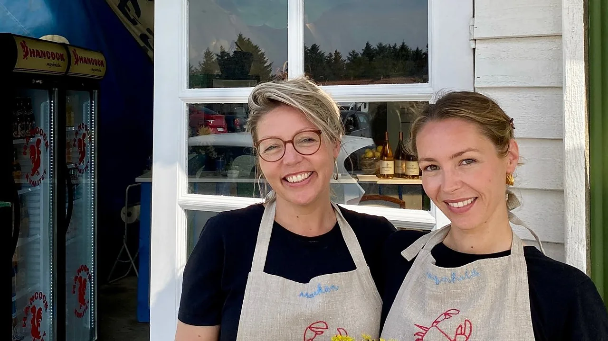
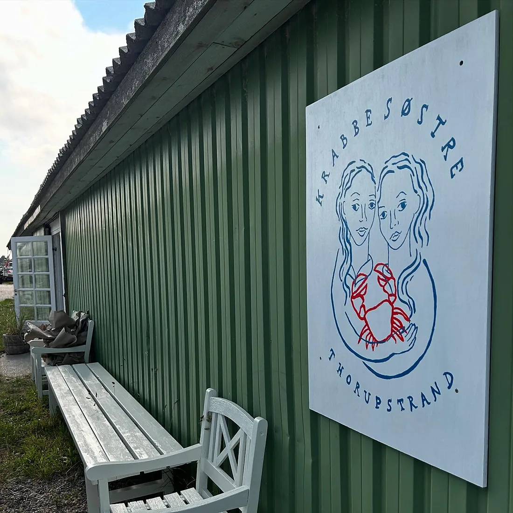
Nytår
Vi har lukket om vinteren, men til nytårsaften pakker vi en kasse med krabbekløer, håndpillede rejer og røget sild. Kørt til døren i hele Danmark for 150 kr.
Sæson 2027
Bordene til næste sæson åbner i foråret. Skriv dig op, så får du besked, før de gør, og før juli er booket.